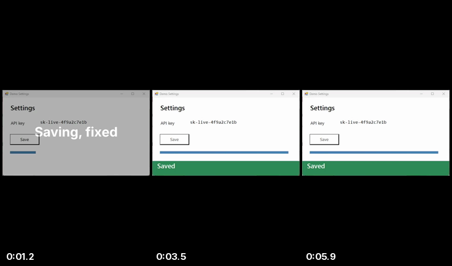

SCREENCAST-MCP / WORKFLOWS / REC 04
Social clip
Screen recordings are landscape; short-form feeds are vertical. The agent re-aspects the recording, puts a title card in front, crossfades the two, lays music under it at a sane level, normalizes loudness, and encodes for the platform.
Make a TikTok from the demo recording: 9:16 with the window letterboxed, a 1.5 s title card that says “Saving, fixed”, a fade into the clip, and this music under it.
reframe → title_card → assemble_highlights → music_bed → normalize_audio → export_preset. Paths are shortened; every value is from a real run.
- reframe { "input": "rec-….mp4", "aspect": "9:16", "fit": "pad" }
padletterboxes and keeps the whole window;cropfills the frame and loses the sides.{ "outputPath": "reframe-….mp4" } - title_card { "text": "Saving, fixed", "duration": 1.5, "width": 1080, "height": 1920 }{ "outputPath": "title-….mp4" }
- assemble_highlights { "clips": ["title-….mp4", "reframe-….mp4"], "transition": "fade", "width": 1080, "height": 1920 }Normalizes size, fps, and audio first, so mixed clips join cleanly.{ "clips": 2, "transition": "fade" }
- music_bed { "video": "highlights-….mp4", "music": "music.wav", "musicVolume": 0.3 }Loops or trims the track to the video and fades it in and out.{ "mixedWithOriginal": true }
- normalize_audio { "input": "music-….mp4", "target": "youtube" }Two-pass loudnorm to −14 LUFS, the level most feeds normalize to anyway.{ "before": { "lufs": -41.59 }, "after": { "lufs": -14.05 } }
- export_preset { "input": "loudnorm-….mp4", "platform": "tiktok" }{ "aspect": "9:16", "fps": 30 }

Swap platform for youtube, instagram_reel, x, or square. Have narration? Run transcribe and burn_subtitles with style: "social" before the export: most feeds autoplay muted.